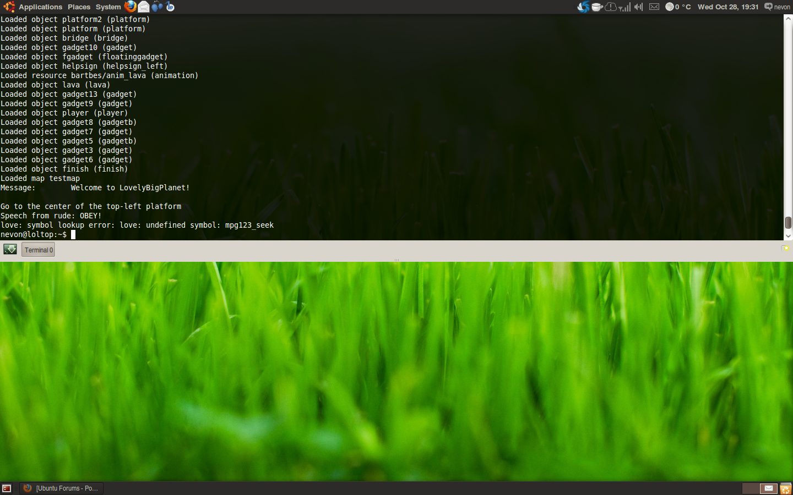
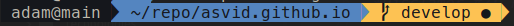
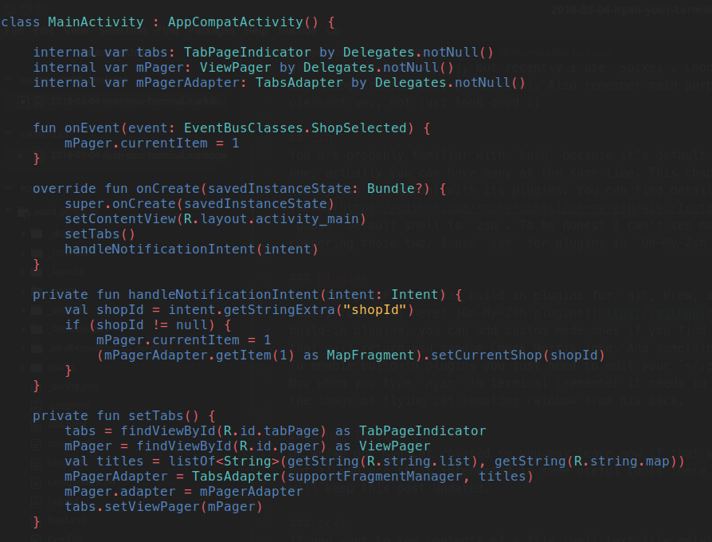
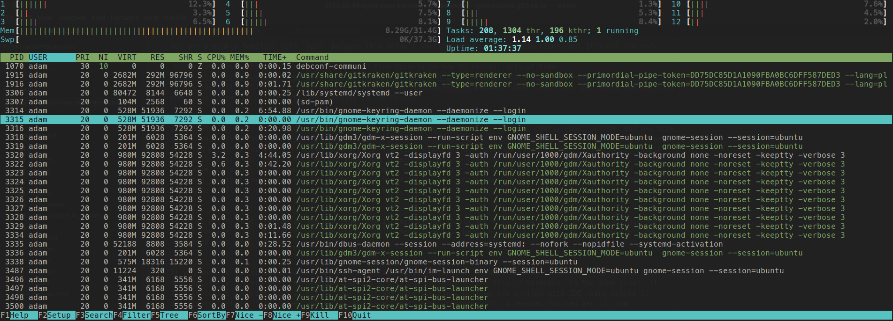
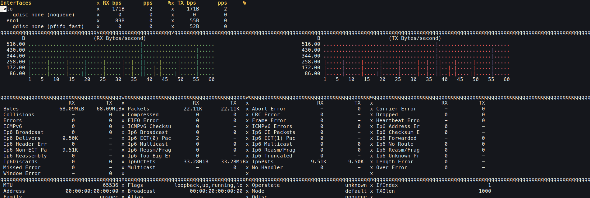
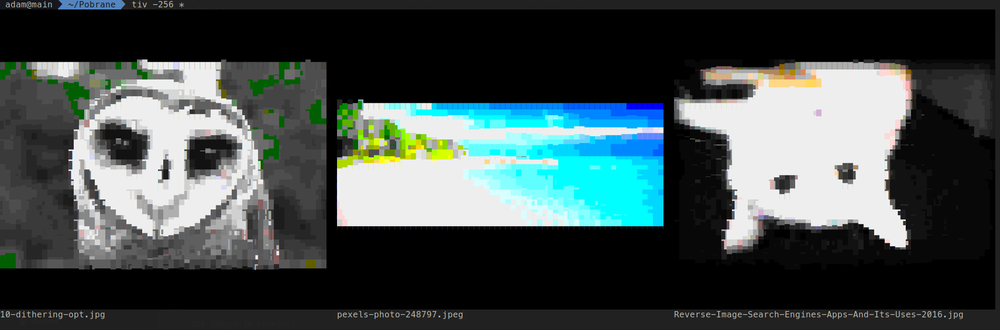
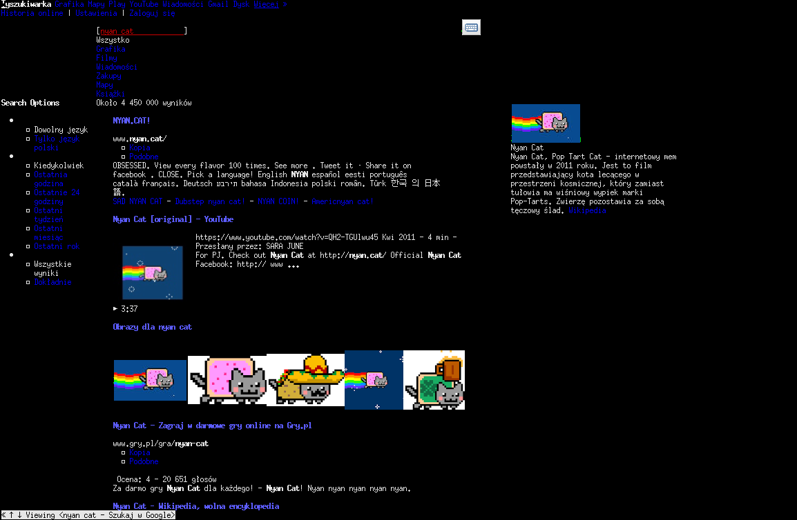
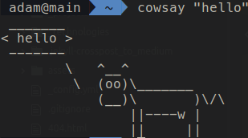
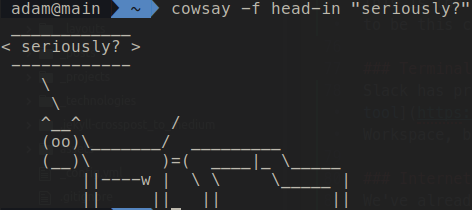
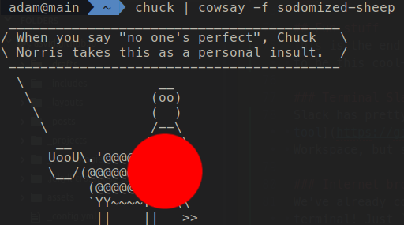

Disclaimer #1: I’m an Android developer, not sysadmin. I use terminal to help me with my workflow, not as my main tool, so please keep this in mind :)
Disclaimer #2: This is based on Linux (Ubuntu), but most stuff should work on OSX also.
Terminal?
If you are a developer (and not a Windows peasant), you might had to use terminal for day to day stuff like installing node.js or python packages, or running scripts. But there is a lot more in this simple text user interface. Imagine you could do anything, and I mean ANYTHING you can do with GUI software or even more, in single window, just by typing orders. Unlimited power (and responsibility also…) available for those who are not afraid. Also, using terminal is something that distinguishes casual PC user (those internet == Facebook type) from true super users.
Anything? I want NyanCat
We’ll get to that, don’t worry. But you have to eat your meat before you can have pudding 1. You know already how the terminal window looks like, right? It’s pretty boring and not really encouraging. But we can make it better, both looking and functional.
Guake
First thing I get on fresh Linux installation is Guake terminal. Not only it reminds me one of my favorite games, it’s also a productivity monster. This is terminal that overlays any application, provide tabs, lots of customization options. For more info check website Guake. If you are using Ubuntu for install you just type sudo apt-get install guake in your current terminal window, and then type guake to run it and F12 to show it, should look like this:

How cool is that? :) It’s a good idea to add guake to start programs, so it will always be turned on when you need it. Let’s customize it a bit. Right click anywhere in guake terminal and then find and open Preferences. Lots of interesting and confusing stuff, but first I recommend to change some keyboard shortcuts. F12 for me at least is not optimal way to open terminal. Some people have it set for tilde key (this one below Esc) because its rarely used but easy to reach. I personally prefer to have ctrl + ` so I don’t loose backtick sign access (that is pretty useful when writing in Markdown… like this post).
Tabs
Another thing is creating and closing tabs - we can have many terminal windows open in bars and we should use it! I use ctrl + t to open new tab, and ctrl + w to close it. Ok so we have tabs, you can switch them by clicking on them… but wait, we use terminal, why even bother with mouse? I’ve set switching to next tab to ctrl + right arrow and ctrl + left arrow for previous one. There are also setting for selecting tab you want i.e. third from left, but I don’t really use them.
Themes
At first Guake may not look any more interesting than standard terminal app, but it has build-in themes that you should check out in preferences. All popular ones are here like Monokai or Solarized. I used to be a fan of Hombrew (this green Matrix-like style), but recently I use Spixel. Choose whatever makes you happy, but don’t forget about adjusting transparency of terminal. Also remember main purpose of theme is to make text in terminal be readable in pleasant way, not just look good :)
Zsh
You are probably familiar with bash because it’s default shell in most Linux distributions. But it’s not the only one, actually you can have many at the same time. This chapter will be focused on shell called zsh (Z shell) and tool Oh-My-Zsh2 with its plugins. You can find details on how to install both of them here. After installation, you have to switch your guake default shell to zsh. To be honest I can’t see much diference between bash and zsh but there are articles compering those two. I use zsh mostly for plugins in Oh-My-Zsh. And this cool git directories look:

plugins
The Oh-My-Zsh tool has build in plugins for git, brew, django, gradle, jira, node, pearl, ruby, python and way more stuff, full list here: Oh-My-Zsh plugins. But those are only build-in plugins, you can add custom made ones if you find something interesting. There is also chucknorris plugin that will return you random Chuck Norris joke. And something that you came for to this post - NyanCat plugin.
To enable build-in plugins you just need to edit your ~/.zshrc file, find where plugins list begins and add nyan. Now when you type nyan in terminal (remember it needs to be zsh shell, not bash) your eyes will be burned with the image of flying cat shooting rainbow from his back.
Other Tools
Ok we’ve got NyanCat covered so you may leave now if that was seriously the only thing why you are reading this post. But if you are still interested in some useful tools there is a list below of ones I’m using. It may grow overtime, I will keep this post updated.
ccat
If you want to see contents of a file (well text file only) in terminal without opening it in nano or if you feel suicidal in vim, you use cat command. And it prints you contents of the file in terminal. In the same color. If file contained shopping list it’s fine, but if it was some script… well we are spoiled with IDE using colors to distinguish methods from values and stuff. And here comes ccat (color cat?) to rescue. You can get it from here. Usage is the same as standard cat, and it looks like that:

htop
For sure you are familiar with monitor tool that shows you usage of processor, RAM, network and list of processes. There are same looking tools on Windows, Ubuntu, OSX working in nice GUI. But you live in terminal now, so how to get info about which process is eating all your memory? htop is best tool for me. Here is how to install it on few linux distributions. You run it by typing htop in terminal. It should look familiar to those GUI tools, but build with components available in terminal :) It allows you to sort processes by their memory or CPU usage, also filter and kill them. All you would want from resources monitoring tool.

bmon
All but network monitoring. This can be achieved with bmon tool. It’s available for Linux and OSX, you can get it from here. I personally like how RX/TX graphs are drawn :)

Images and movies in terminal
So we have ccat to see nicely colored code in termianal but sometimes you just need to check if image in catalog is correct, why bother with GUI? There is a tool tiv. Usage is pretty simple, just type tiv <image_file> and it should work, but for me I need to add -256 flag because colors don’t render correctly. You can also show all images in folder using tiv *, it looks… well it does what is terminal-possible:

There is also another tool caca that does similar thing, just in separate window. It’s installed by sudo apt-get install caca-utils and usage is cacaview <image_file>. Image window is closed when you kill process with ctrl + c.
Movie files can be played from terminal using mplayer tool, installed and used just like caca. Mplayer also opens new window to display media. And you know what’s cool about those 2 tools? You can combine them, to display movie in ASCI :) useless as hell, but why not mplayer -vo caca <movie_file>
Fun stuff
This is the end of actual tools, now begins fun part with stuff you may find interesting, or just show to other nerds to be this cool-terminal-guy.
Terminal Slack
Slack has pretty good app for all platforms, but you can still run it in terminal, because why not? This tool runs on Node.js and allows you to connect to only one Slack Workspace, but still it looks cool and runs fast. I’m not sure how notifications would work…
Internet browser in terminal
We’ve already covered showing images, playing movies and using Slack in terminal, why stop there? Let’s google from terminal! Just sudo apt-get install w3m and then w3m google.com. How useless cool is that? If you use xterm terminal it even displays images.

What does the cow say?
Cowsay is kinda easter egg that was available for Linux users for 2 decades3. It just prints and ASCII comics image with a cow saying provided text. So you can get something basic like:

a bit more spicy like:

or combined with our old friend - plugin chucknorris to Oh-My-Zsh (I’ve decided to censorship this one):

Enough
Even though cowsay has many other options to render meaningful images I think I will stop here. As mentioned this post may be updated when I find some useful tools that will improve my workflow. Anyway I hope at least some of you will now start using more terminal apps, because they are cool. Let me know if there is something I should start using or is just useless fun thing to have in terminal :)